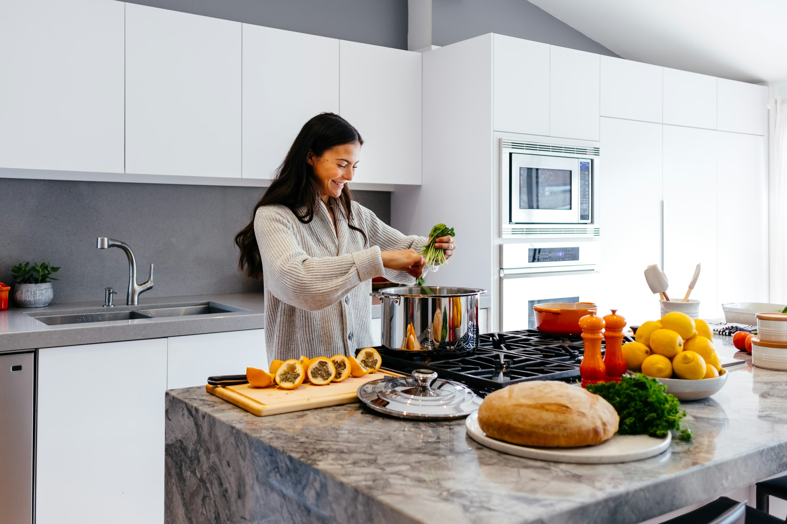
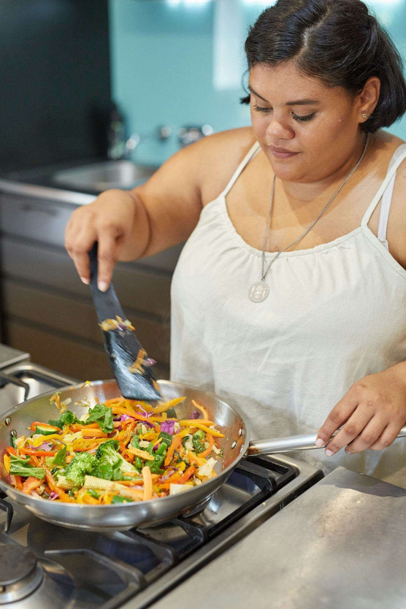
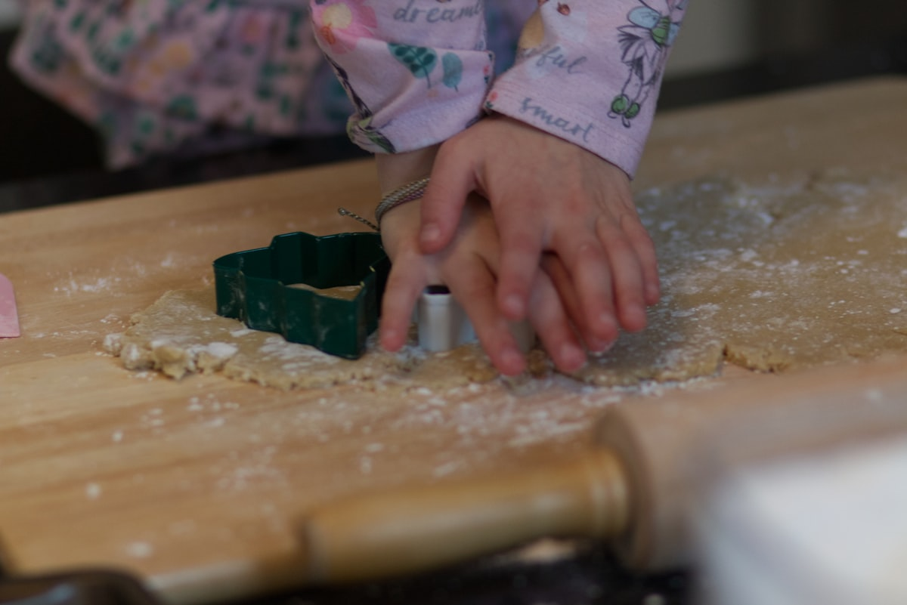

Virtual nutrition care for adults, children & teens, and workplaces — licensed in Missouri and New Jersey, with in-network insurance billing.
Major insurance plans, billed directly — coverage verified before your first visit.
Self-pay packages are also available for out-of-network plans.
Carrier logo strip drops in here at launch, from Katie’s credentialing.
Real nutrition care,
without the waiting room.
Reach out, get clear answers about coverage, and book your first telehealth visit — scheduling and intake happen in Katie’s secure client portal.

One-on-one care for adults — weight management and pre- or post-bariatric nutrition, built around your actual week.
Learn more →
Family-centered care with parents in the room — growth questions, selective eating, and teenage appetites, met calmly.
Learn more →Employer wellness programming, lunch-and-learns, and group contracts — delivered virtually to your team.
Learn more →Send your name, email, and phone — or have your provider’s office send a referral the same way.
Katie checks your benefits and gives you clear answers about cost before anything is scheduled.
Your first telehealth visit is booked through her secure client portal — from your own kitchen table.
Katie Sengheiser is a Registered Dietitian licensed in Missouri and New Jersey, practicing entirely by telehealth from St. Peters, Missouri. Her clinical focus is weight management and bariatric nutrition, with a genuine interest in helping children and teens build a workable relationship with food.
The practice is deliberately solo: the clinician who takes your call, verifies your coverage, and sits across the screen at every visit is the same person. Physician, therapist, and PT referrals are welcome.
More About KatieKatie’s headshot from her shoot drops in here.
The questions referring offices and families ask most — answered plainly.
Yes — Monarch Nutrition Counseling bills participating insurance plans directly, and your coverage is verified before your first appointment. Self-pay packages are available for out-of-network plans. The complete plan list will be published here at launch.
Katie is licensed in Missouri and New Jersey, and can see residents of either state by telehealth.
All visits are virtual. You’ll meet with Katie by secure video from home — no office, no waiting room, no commute.
Yes — child and teen nutrition is one of Katie’s core services, with parents in the room and pediatrician referrals welcome.
Send your patient’s name and contact information through the contact form or by phone. Katie verifies coverage, handles intake in her secure client portal, and takes it from there.
Marked up with FAQPage schema in the build, so search and AI assistants can quote these answers.
Fraunces SOFT (display) · Source Sans 3 (text) · Katie's approved palette verbatim — deep brown does the heavy lifting; orange and rose never dominate.
Motion. Hero rises once on load (900ms, soft-out, 120ms stagger). Tiles, steps, and FAQ items reveal on scroll where supported; cards lift with brown-tinted shadows; the FAQ indicator rotates 45° on open (pure CSS details/summary). Everything rests still under prefers-reduced-motion. The full build swaps scroll-timeline for IntersectionObserver — no animation library.